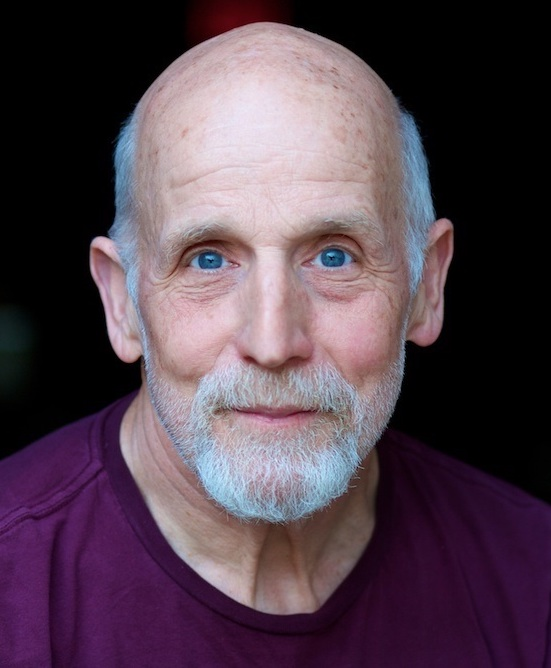
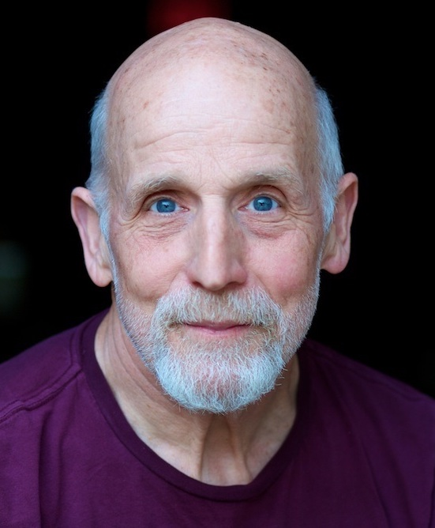

You are awesome. You are unique. Your headshot should convey as much.
From actors and singers to business professionals and entrepreneurs, from Facebook to LinkedIn to your own personal website, the headshot is the calling card of the digital age.
Every one of my sessions is an organic, tailor-made experience, with a focus on keeping things fun and relaxed. I shoot using a combination of natural and studio lights. Most of my shoots happen in and around Park Slope, though I am happy to travel if you've got a dream spot in mind. Drop me a line for more info, to set up a consultation, or to make an appointment!
Headshot sessions are $350 and include unlimited digital images. Sessions tend to run about two to three hours. Make-up/hair/styling is paid separately on the day of the shoot. Inquire for pricing.